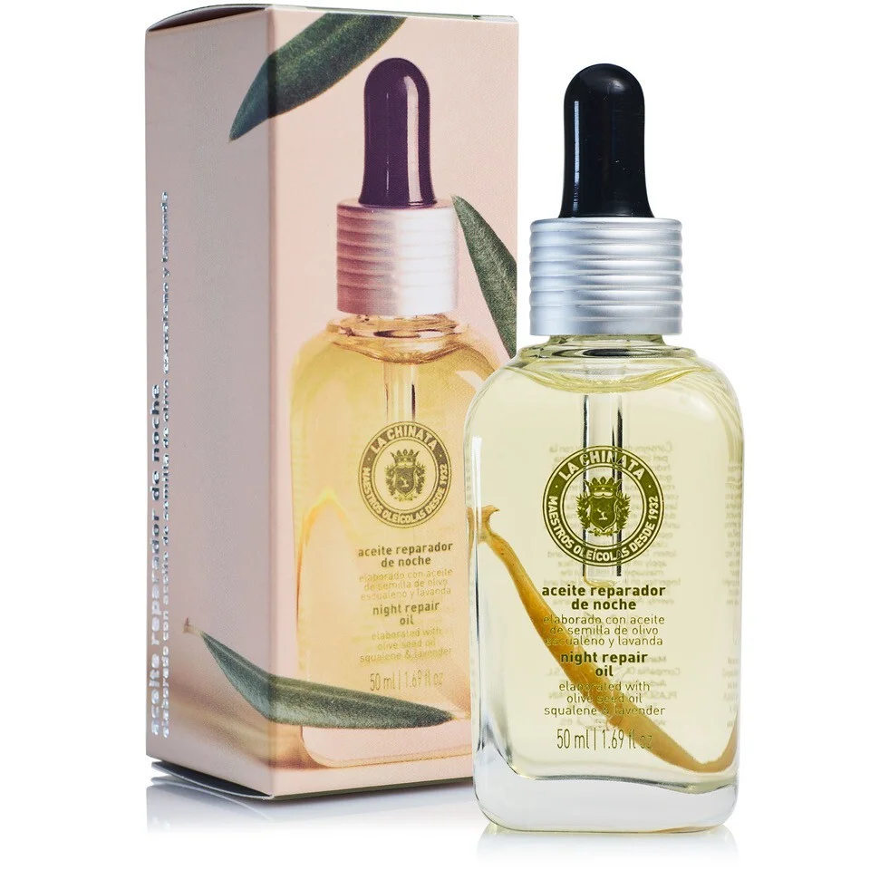

Cosmetic Made in Spain
聯繫我們
產品展示
ACEITE REPARADOR DE NOCHE LA CHINATA

112 Kr 50ml
El Aceite Reparador actúa durante la noche, ya que la piel se repara durante el sueño y entra en una fase de descanso y regeneración celular. Con ello, actúa como antioxidante, previene la aparición de los signos de la edad y aporta hidratación a la piel. Está elaborado con Aceite de Oliva Virgen Extra, un gran antioxidante y acondicionador de la piel, y con aceite de onagra, rico en ácidos grasos omega 6, que nutren en profundidad la piel, ayudan a regenerar los tejidos y reducen los signos de fatiga y envejecimiento cutáneo. También cuenta con aceite de semilla de oliva, con cualidades hidratantes y antioxidantes; con aceite de semilla de uva, que repara, hidrata y purifica, así como con aceite de lavanda, perfecto para calmar las pieles sensibles o irritadas. El resultado es una piel más nutrida, hidratada, descansada y luminosa.
Vida Copyright © 2024 All rights reserved